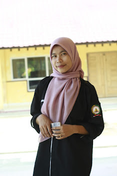

Kurangnya Implementasi Emansipasi di Masa Pandemi Covid-19
Seiring perkembangan zaman di masa pandemi Ini banyaknya fakta terpapar di lingkungan sekitar kemunduran semangat dan percaya diri dari generasi milenial. 21 April 2022, tepatnya memperingati Hari R.A Kartini diseluruh Indonesia, biasanya dikenal sebagai pahlawan nasional yang lihai dalam literasi. Tanggal 21 April dimana setiap orang terutama perempuan merasakan bangga terhadap perjuangan kebebasan perempuan-perempuan dan kesetaraan gender antara laki-laki dan perempuan. Secara umum konsep gender prinsipnya mengacu pada peran dan tanggung jawab sebagai perempuan dan sebagai laki-laki yang diciptakan dan terinternalisasi dalam kebiasaan dan kehidupan keluarga, dalam budaya-masyarakat dimana kita hidup termasuk harapan-harapan yang diinginkan bagaimana seharusnya menjadi perempuan dan bagaimana menjadi seorang laki-laki, baik harapan atas sifat-sifatnya, sikap maupun perilakunya. Gender dapat didefinisikan sebagai perbedaan peran, atribut, sikap tindak atau perilaku, yang tumbuh dan berkembang dalam masyarakat atau yang dianggap masyarakat pantas untuk laki-laki dan perempuan. Pada hari kartini hampir setiap pemuda pemudi menunjukkan kebanggannya terharap pahlawan nasional ini dengan meng-upload story di sosial media masing-masing. Namun, pada hakikatnya masih banyak yang belum memaknai secara sadar kemerdekaan wanita Indonesia setelah susah payah R.A Kartini mempelopori hak-hak kebebasan dan kemerdekaan terhadap perempuan sehingga perempuan sampai saat Ini bisa mengenyam proses Pendidikan setinggi-tingginya. Emansipasi wanita adalah gerakan yang bertujuan untuk memastikan kebebasan pemenuhan diri dan pengembangan diri bagi perempuan, serta akses yang setara ke sumber daya domestik dan masyarakat. Namun sekarang realitanya perempuan terlalu nyaman pada zona nyaman membuat perempuan tak berdaya untuk keluar dari zona nyaman mereka. Sehingga hal ini bisa menyebabkan Kemunduran implementasi emansipasi wanita pada generasi milenial yang kerap dianggap generasi emas penerus bangsa. Pentingnya memaknai secara dalam emansipasi wanita Ini sangat bernilai plus bagi kehidupan tiap individu yang benar-benar memaknai arti emansipasi wanita dalam diri nya. Konvensi CEDAW (2012:27) menegaskan kembali bahwa semua manusia dilahirkan bebas, memiliki harkat dan martabat serta hak yang sama. Oleh karena itu, Negara wajib menjamin persamaan pemenuhan hak laki-laki dan perempuan di bidang ekonomi, sosial, budaya, sipil dan politik dan bidang lainnya. Jaminan ini hendaknya tertuang secara yuridis dalam hukum dan/atau peraturan perundang-undangan, serta kebijakan diberlakukan secara nyata, dan yang paling penting hak dan persamaan pemenuhan hak bagi laki-laki dan perempuan itu, benar-benar dinikmati oleh perempuan secara nyata. Jadi bukan hanya secara de jure atau formal, tetapi juga akses secara de facto, bukan hanya persamaan formal tetapi juga persamaan secara faktual. Perlunya kesadaran diri yang tinggi untuk memoles diri agar semakin berkilau di antara berlian yang tak mau digesek setiap hari, artinya jangan hidup untuk kesenangan namun tak ada progress yang dilakukan, namun jadikan hidupmu sebagai perempuan yang tangguh akan gesekan-gesekan dan nanti pada akhirnya akan memberikan kilau yang lebih pasti. Dengan adanya emansipasi wanita seharusnya bisa menopang pergerakan perempuan yang kerap sekali dianggap lemah. Tidak jauh-jauh sebagai contohnya dalam organisasi ketika pemilihan Ketua langsung menunjukan laki-laki dan merasa diri tidak mampu melewati batas-batas yang menghalangi, wanita selalu merasa dibelakang laki-laki. Padahal laki-laki dan perempuan mempunyai hak dan kesetaraan gender antara laki-laki dan perempuan. Untuk itu kita sebagai perempuan Indonesia, harus lebih aktif dalam pengembangan diri sebagai perempuan yang luar biasa, dan tingkatkan keyakinan diri untuk melebihi batas dalam segi positif jadikan dasar keteguhan hati bertekad dalam pengimplementasian emansipasi wanita agar kita sebagai perempuan tak tertinggal dalam segala segi persepsi diri masing-masing.
Penulis: Manja Nurani